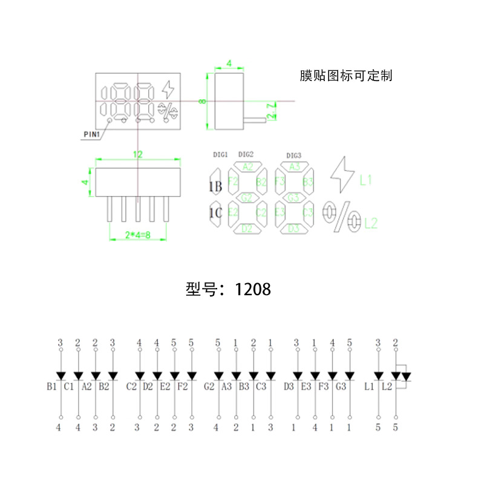
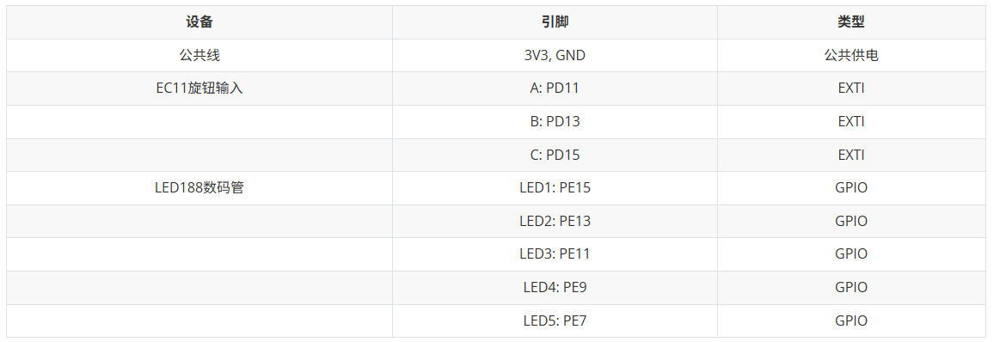
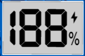
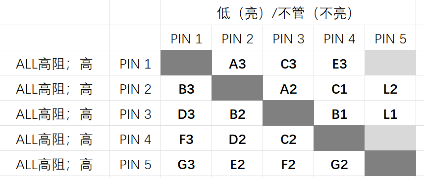
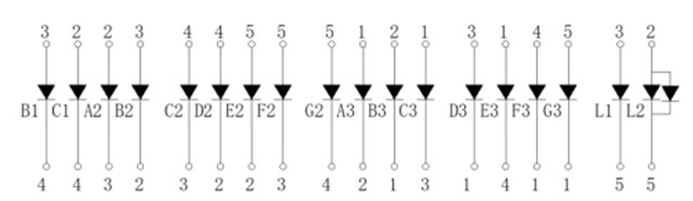
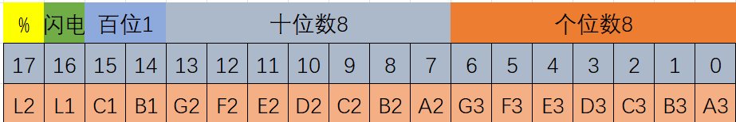
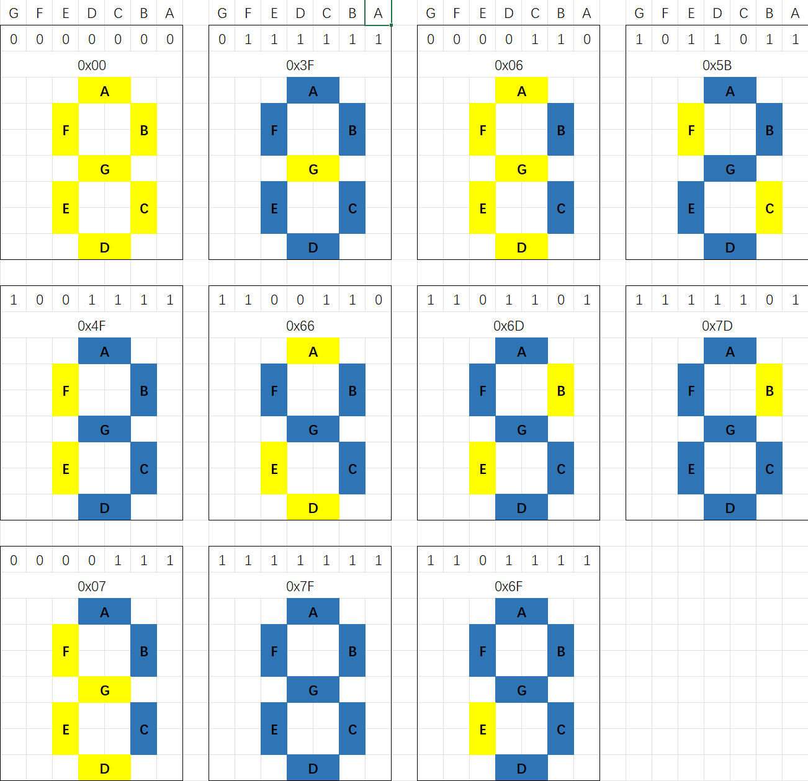

<!DOCTYPE lake>
<h2 data-lake-id="b4Jmq" id="b4Jmq"><span data-lake-id="u77cfdc48" id="u77cfdc48">学习目标</span></h2><ol list="u6ea40e2f"><li data-lake-id="ue2044f63" fid="u40de3efa" id="ue2044f63"><span data-lake-id="uecbec48f" id="uecbec48f">掌握188数码管实现原理</span></li><li data-lake-id="ufb8908f6" fid="u40de3efa" id="ufb8908f6"><span data-lake-id="u6b5caabf" id="u6b5caabf">掌握188数码管驱动封装</span></li><li data-lake-id="u98166eed" fid="u40de3efa" id="u98166eed"><span data-lake-id="u9befaf17" id="u9befaf17">理解 状态驱动显示</span></li><li data-lake-id="uea7e4f4b" fid="u40de3efa" id="uea7e4f4b"><span data-lake-id="u10cf676b" id="u10cf676b">理解 数据和显示分离</span></li></ol><h2 data-lake-id="KSK05" id="KSK05"><span data-lake-id="ua289baa6" id="ua289baa6">学习内容</span></h2><h3 data-lake-id="Oh5A4" id="Oh5A4"><span data-lake-id="ub2f24e65" id="ub2f24e65">188数码原理图</span></h3><p data-lake-id="u53e53729" id="u53e53729"></p><p data-lake-id="u0ab97d7c" id="u0ab97d7c"></p><p data-lake-id="uee8f5055" id="uee8f5055"></p><a class="yuque-card-link" href="https://www.yuque.com/attachments/yuque/0/2025/xlsx/27903758/1751633761776-81717f9d-5f68-4fd7-9320-3f86492ee43c.xlsx">localdoc：188数码管_定制数码管_段码屏.xlsx</a><h3 data-lake-id="VTFPf" id="VTFPf"><span data-lake-id="uef718f10" id="uef718f10">点灯原理</span></h3><p data-lake-id="u96a558e2" id="u96a558e2"><span data-lake-id="u042f9b4d" id="u042f9b4d">任意两个引脚间最多可以接两个灯，一正一反。</span></p><ul list="u99df97f4"><li data-lake-id="u580c1211" fid="ud3d5410a" id="u580c1211"><span data-lake-id="uef4e12b0" id="uef4e12b0">2个引脚间最多可以控制2个灯</span></li><li data-lake-id="u472d6de2" fid="ud3d5410a" id="u472d6de2"><span data-lake-id="u5cd5821a" id="u5cd5821a">3个引脚间最多可以控制6个灯</span></li><li data-lake-id="u97c145a9" fid="ud3d5410a" id="u97c145a9"><span data-lake-id="u449dcb06" id="u449dcb06">4个引脚间最多可以控制12个灯</span></li><li data-lake-id="u62eacb40" fid="ud3d5410a" id="u62eacb40"><span data-lake-id="u0c6ab1bc" id="u0c6ab1bc">5个引脚间最多可以控制20个灯</span></li><li data-lake-id="ubf6cacde" fid="ud3d5410a" id="ubf6cacde"><span data-lake-id="u55df7e3d" id="u55df7e3d">6个引脚间最多可以控制30个灯</span></li><li data-lake-id="uf0ef3364" fid="ud3d5410a" id="uf0ef3364"><span data-lake-id="uef2dfd68" id="uef2dfd68">依次类推</span></li></ul><p data-lake-id="uff7a07b9" id="uff7a07b9"><span data-lake-id="u05a71646" id="u05a71646">由于两个引脚间的灯是正反接线，因此，两个灯理论上不可能同时亮。</span></p><p data-lake-id="ufaf71650" id="ufaf71650"><span data-lake-id="u1b2f21d4" id="u1b2f21d4">但是，如果同时点亮两个亮，可以快速进行高低切换，就是欺骗人眼，不停去切换点灯，看起来同时亮。</span></p><h3 data-lake-id="XqKaU" id="XqKaU"><span data-lake-id="u2b87ac1d" id="u2b87ac1d">驱动封装</span></h3><h4 data-lake-id="epaXF" id="epaXF"><span data-lake-id="ue9816931" id="ue9816931">业务接口封装</span></h4><p data-lake-id="ubcc35d8a" id="ubcc35d8a"></p><p data-lake-id="u63fd47db" id="u63fd47db"><span data-lake-id="u08e6fbf0" id="u08e6fbf0">功能角度定义：</span></p><ol list="ucd1a0ac5"><li data-lake-id="u8fbc8722" fid="u6f3e1dfb" id="u8fbc8722"><span data-lake-id="uc646748a" id="uc646748a">显示 数字</span></li><li data-lake-id="u8c25eba2" fid="u6f3e1dfb" id="u8c25eba2"><span data-lake-id="u86f40cef" id="u86f40cef">显示 闪电</span></li><li data-lake-id="uaad982ee" fid="u6f3e1dfb" id="uaad982ee"><span data-lake-id="u5e184a7c" id="u5e184a7c">显示 百分号</span></li></ol><p data-lake-id="ua78c0a54" id="ua78c0a54"><span data-lake-id="u92da9ca0" id="u92da9ca0">驱动接口定义：</span></p><ol list="u87fc818b"><li data-lake-id="u1efe9cca" fid="ub2225f96" id="u1efe9cca"><span data-lake-id="u65fe12df" id="u65fe12df">驱动初始化（常规操作）</span></li><li data-lake-id="uc04d28c0" fid="ub2225f96" id="uc04d28c0"><span data-lake-id="u22fc1128" id="u22fc1128">业务功能设置</span></li><li data-lake-id="u179db9eb" fid="ub2225f96" id="u179db9eb"><span data-lake-id="ubf95a732" id="ubf95a732">显示刷新</span></li></ol><span class="yuque-card-unsupported">[codeblock]</span><h4 data-lake-id="FMYxZ" id="FMYxZ"><span data-lake-id="uc9e801bc" id="uc9e801bc">引脚的三态</span></h4><p data-lake-id="u02d40f06" id="u02d40f06"><span data-lake-id="ufa7708e0" id="ufa7708e0">“三态”（Three-State）通常是指一种电路或信号的状态特性，尤其在数字电路设计和通信中非常常见。它指的是一个信号线可以处于以下三种状态之一：</span></p><ol list="u24736f73"><li data-lake-id="ude16bcdd" fid="u15a3d540" id="ude16bcdd"><span data-lake-id="ud5edd526" id="ud5edd526">高电平（逻辑1）</span></li></ol><p data-lake-id="u4c36840f" id="u4c36840f"><span data-lake-id="u532755ab" id="u532755ab">信号线输出高电平电压，表示逻辑“1”。</span></p><ol list="u9c5f7520" start="2"><li data-lake-id="u5a78e880" fid="u63396f34" id="u5a78e880"><span data-lake-id="uf9578940" id="uf9578940">低电平（逻辑0）</span></li></ol><p data-lake-id="u38d1f6fe" id="u38d1f6fe"><span data-lake-id="u9b910683" id="u9b910683">信号线输出低电平电压，表示逻辑“0”。</span></p><ol list="u96f69bf4" start="3"><li data-lake-id="u6f670bcf" fid="u467b9bf3" id="u6f670bcf"><span data-lake-id="u13c30d56" id="u13c30d56">高阻态（High-Z 或 高阻抗状态）</span></li></ol><p data-lake-id="uf1533aea" id="uf1533aea"><span data-lake-id="u03523883" id="u03523883">信号线既不驱动高电平也不驱动低电平，而是处于一种高阻抗状态。在这种状态下，信号线相当于断开连接，不会对其他电路产生影响。</span></p><p data-lake-id="u4d761ab8" id="u4d761ab8"><span data-lake-id="ud92b9602" id="ud92b9602">一个引脚有三种状态，可以通过三种状态的搭配实现不同灯亮灭效果</span></p><p data-lake-id="ucb443400" id="ucb443400"></p><p data-lake-id="u65a4376d" id="u65a4376d"></p><span class="yuque-card-unsupported">[codeblock]</span><h4 data-lake-id="wFFHu" id="wFFHu"><span data-lake-id="u1e70268e" id="u1e70268e">灯的状态表达</span></h4><p data-lake-id="uf6b3462b" id="uf6b3462b"><span data-lake-id="u9add8fda" id="u9add8fda">对于灯的 状态，只有两种，亮或者灭，可以采用1个bit进行表示。如果是18个灯，就用18个bit表示</span></p><p data-lake-id="u171b2efd" id="u171b2efd"></p><span class="yuque-card-unsupported">[codeblock]</span><p data-lake-id="u63da3c73" id="u63da3c73"><br/></p><p data-lake-id="u91815233" id="u91815233"><span data-lake-id="ua5e1ee6c" id="ua5e1ee6c">以 A3为例，如果要A3亮，那么 1号引脚高电平，2号引脚低电平即可。灯的状态由引脚的三态搭配来驱动。</span></p><p data-lake-id="ue013d189" id="ue013d189"><span data-lake-id="u6e75a449" id="u6e75a449">为了完成所有的搭配，按照矩阵方式进行轮询设置灯的状态即可</span></p><p data-lake-id="u89426861" id="u89426861"></p><span class="yuque-card-unsupported">[codeblock]</span><p data-lake-id="u86fa8c94" id="u86fa8c94"><span data-lake-id="u7cd8fd4c" id="u7cd8fd4c">​</span><br/></p><h4 data-lake-id="H2PWL" id="H2PWL"><span data-lake-id="u7e8db231" id="u7e8db231">业务接口和状态</span></h4><p data-lake-id="ub6ef0e76" id="ub6ef0e76"><span data-lake-id="u992614f0" id="u992614f0">显示闪电和显示百分号都只是点一个灯，或者设置这一个灯的状态即可</span></p><span class="yuque-card-unsupported">[codeblock]</span><p data-lake-id="u43da9083" id="u43da9083"><br/></p><p data-lake-id="u8ff1cebd" id="u8ff1cebd"><span data-lake-id="ub3ef55e5" id="ub3ef55e5">数字的显示比较繁琐，是多个灯的显示，因此可以做一个表</span></p><p data-lake-id="u28bf987e" id="u28bf987e"></p><p data-lake-id="u65d06e28" id="u65d06e28"><br/></p><p data-lake-id="u5ad26b18" id="u5ad26b18"><span data-lake-id="udbfbd507" id="udbfbd507">想显示什么数据，查表，得到某些灯的状态，再去改变灯的状态即可。</span></p><span class="yuque-card-unsupported">[codeblock]</span><p data-lake-id="ud8e5cd34" id="ud8e5cd34"><br/></p><h4 data-lake-id="YUfiC" id="YUfiC"><span data-lake-id="ue2959808" id="ue2959808">完整代码</span></h4><span class="yuque-card-unsupported">[codeblock]</span><span class="yuque-card-unsupported">[codeblock]</span><h2 data-lake-id="OKDNg" id="OKDNg"><span data-lake-id="ub62ca78d" id="ub62ca78d">练习题</span></h2><ol list="u3b6c5028"><li data-lake-id="u27bd60a5" fid="u7f5902ef" id="u27bd60a5"><span data-lake-id="u297f61b7" id="u297f61b7">实现 188LED 驱动封装</span></li></ol><h4 data-lake-id="WdqtO" id="WdqtO"><span data-lake-id="u2a965870" id="u2a965870">​</span><br/></h4>